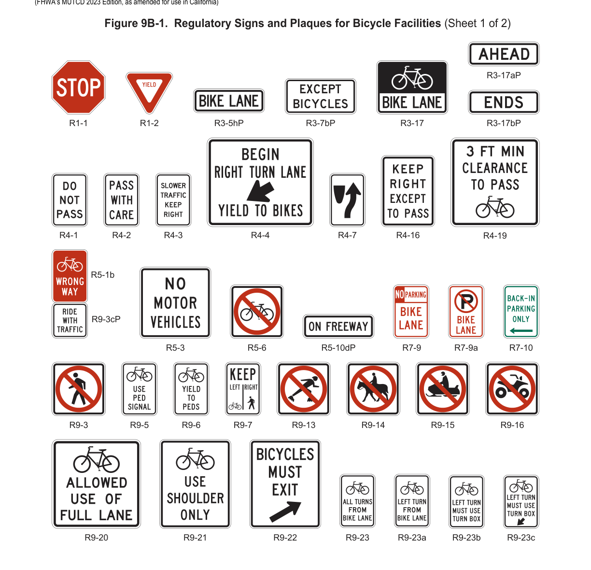
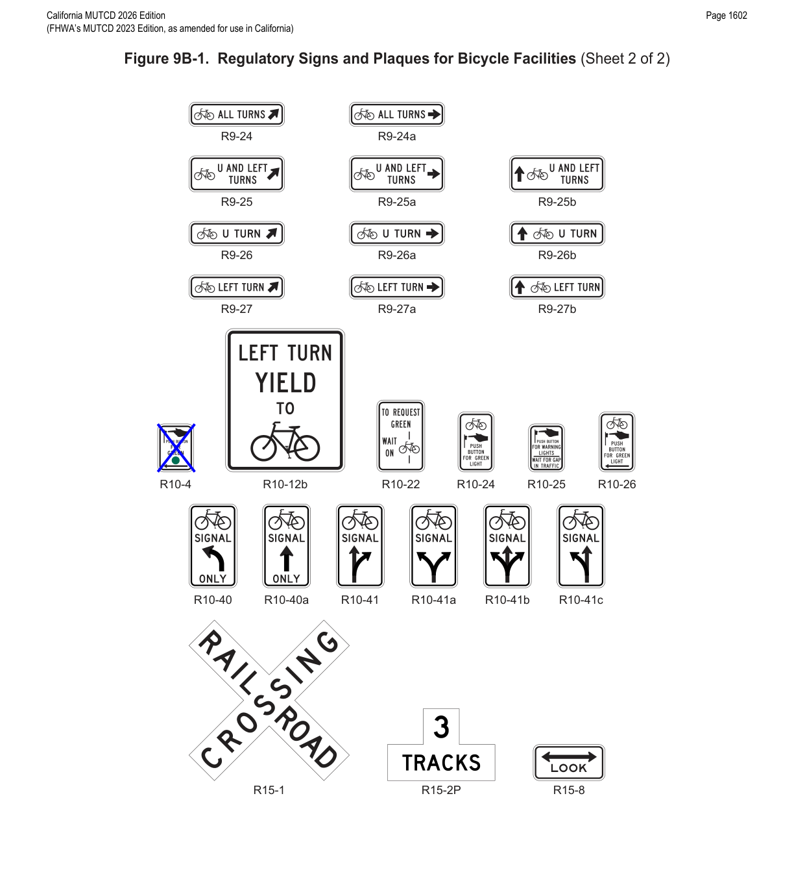
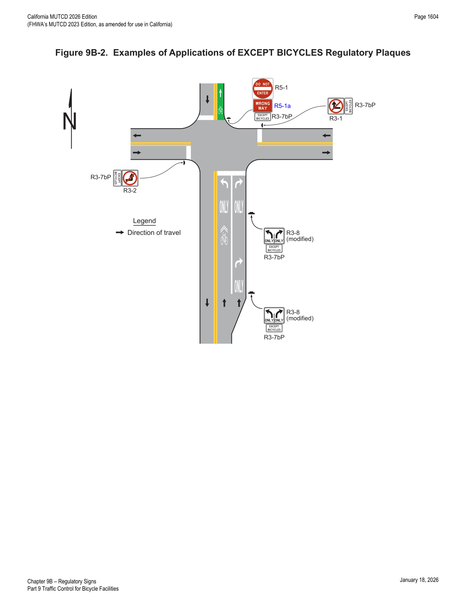
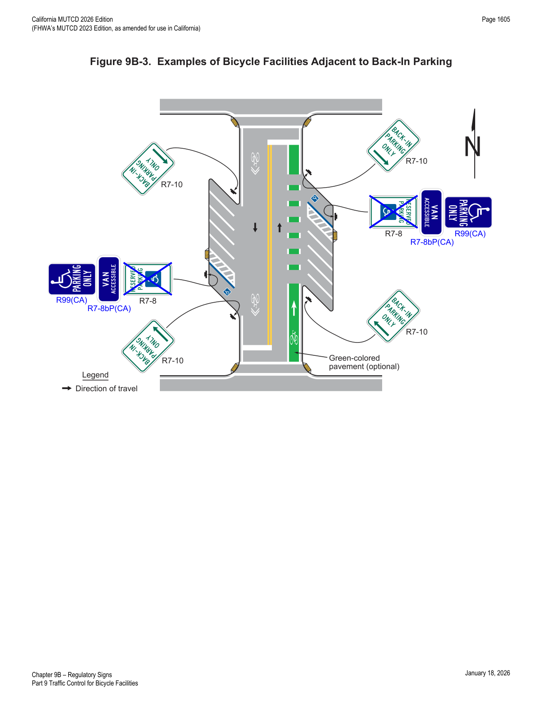
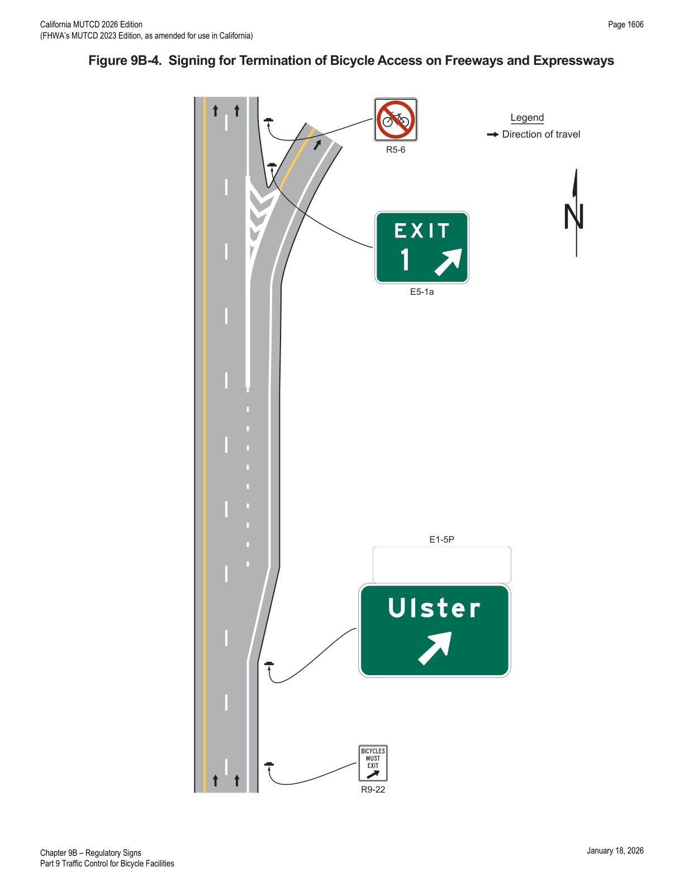
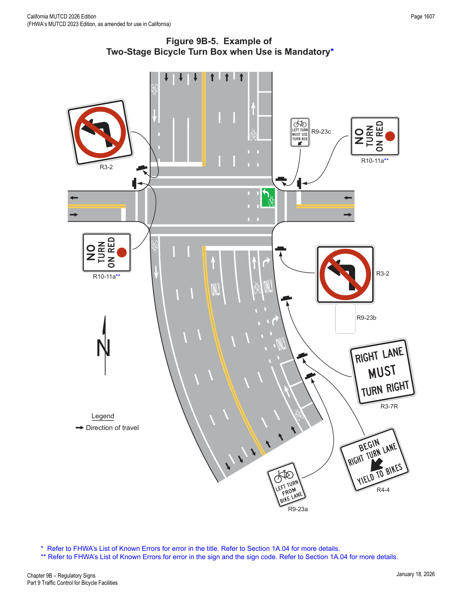
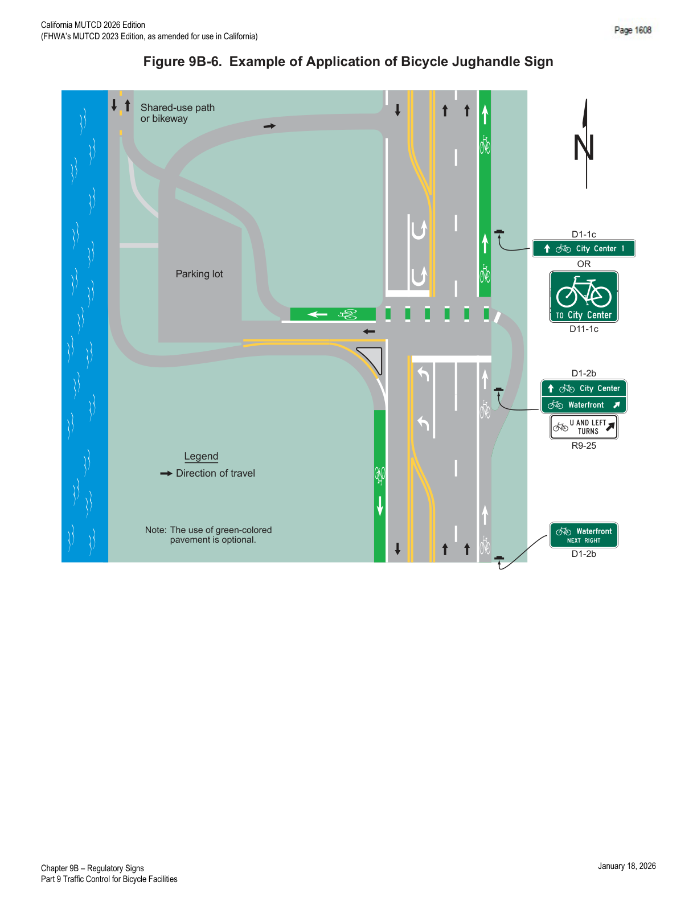
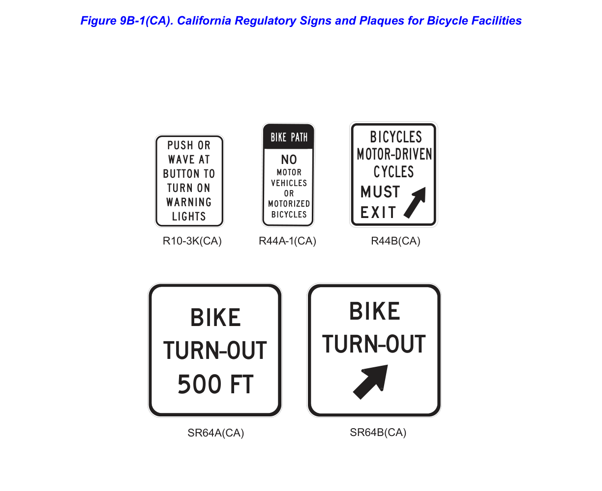

Part 9 · Traffic Control for Bicycle Facilities · Chapter 9B
Regulatory Signs
The regulatory sign series (R1, R3, R4, R5, R7, R9, R10, R15, and California R44/SR64 signs) that establish mandatory bicycle-related traffic control on bike lanes, separated bikeways, shared-use paths, jughandles, two-stage turn boxes, and freeway/expressway bicycle access.
9B.01STOP and YIELD Signs (R1-1 and R1-2)
Standard — Mandatory Requirement
- 01STOP (R1-1) signs (see Figure 9B-1) shall be installed on bicycle facilities at points where bicyclists are required to stop.
- 02YIELD (R1-2) signs (see Figure 9B-1) shall be installed on bicycle facilities at points where bicyclists have an adequate view of conflicting traffic as they approach the sign, and where bicyclists are required to yield the right-of-way to that conflicting traffic.
- 03A STOP sign or a YIELD sign shall not be installed in conjunction with a bicycle signal face (see Chapter 4H).
Option — Permissive
- 04Larger signs may be used on shared-use paths and separated bikeways for added emphasis.
Guidance — Recommended Practice
- 05Where conditions require shared-use path users or bicyclists on separated bikeways, but not roadway users, to stop or yield, the STOP or YIELD sign should be placed or shielded so that it is not readily visible to roadway users.
- 06When the placement of STOP or YIELD signs is being considered, the priority at a shared-use path/bikeway intersection with a roadway should be assigned with consideration of the following: (A) relative speeds of shared-use path, bikeway, and roadway users; (B) relative volumes of shared-use path, bikeway, and roadway traffic; and (C) relative importance of the shared-use path, bikeway, and roadway.
- 07Speed should not be the sole factor used to determine priority, as it is sometimes appropriate to give priority to a high-volume shared-use path that crosses a low-volume street, or to a regional shared-use path that crosses a minor collector street, or where a shared-use path begins, ends, or merges with other types of roadway.
- 08When priority is assigned (see Sections 2B.06 and 2B.08), the least-restrictive control that is appropriate should be placed on the lower-priority approaches. STOP signs should not be used where YIELD signs would provide adequate control.


9B.02EXCEPT BICYCLES Regulatory Plaque (R3-7bP)
Support — Background/Explanatory
- 01There are circumstances where it might be appropriate to exempt bicyclists from regulatory restrictions applied to other traffic.
Guidance — Recommended Practice
- 02Where an engineering study or engineering judgment demonstrates that it is appropriate to exempt bicyclists from the provisions of a regulatory sign, the EXCEPT BICYCLES (R3-7bP) regulatory plaque (see Figure 9B-1) should be used.
Support — Background/Explanatory
- 02aWhere signs are provided to prohibit or regulate turns from streets or driveways that intersect with a roadway and those signs are not intended for bicycle traffic, the supplemental EXCEPT BICYCLES (R3-7bP) regulatory plaque can be used.
- 03Figure 9B-2 shows examples of how the EXCEPT BICYCLES (R3-7bP) regulatory plaque can be applied.
- 03aRefer to FHWA's List of Known Errors for an error in Paragraph 3 text. Refer to Section 1A.04 for more details.
- 04Section 9C.05 contains information regarding the EXCEPT BICYCLES warning plaque when applicable to a warning sign.
Standard — Mandatory Requirement
- 05The EXCEPT BICYCLES regulatory plaque shall not be used to exempt bicyclists from the legal requirement of a STOP or YIELD sign, Yield Here to Pedestrians sign, Stop Here for Pedestrians sign, or a traffic signal indication.
- 06Where a regulatory sign, such as the No Left Turn (R3-2) sign (see Section 2B.26), is installed on the same post or mounting as a STOP sign or YIELD sign, the EXCEPT BICYCLES regulatory plaque shall not be installed in conjunction with the regulatory sign on that post or mounting that includes the STOP sign or YIELD sign.
- 07The EXCEPT BICYCLES regulatory plaque shall be placed below the regulatory sign that it supplements.

9B.03Advance Intersection Lane Control Signs (R3-8 Series) for Bicycle Lanes
Option — Permissive
- 01Advance Intersection Lane Control (R3-8 series) signs (see Section 2B.30) may display the arrangement of a conventional or buffer-separated bicycle lane in relation to other lanes in the same direction that are present on a roadway approach to an intersection.
Support — Background/Explanatory
- 02The number and combination of permissible movements by both the motor vehicle and the bicycle on the same approach to an intersection might be practically limited by the amount of information that can be legibly displayed on signs or in signing sequences and still be readily comprehended by road users. The excessive display of all movements by more than one mode can result in unwieldy signs that are difficult to locate and install.
Guidance — Recommended Practice
- 03On an approach to an intersection with complex geometry that can include multiple through lanes and multiple turn lanes and also includes a bicycle lane, consideration should be given to displaying all allowable movements on separate signs, such as using Mandatory Movement Lane Control (R3-5) signs (see Section 2B.28) for the through lanes and Mandatory Movement Lane Control (R3-7) signs (see Section 2B.28) for the turn lanes, and guide signs for bicycle routes (see Sections 9D.02 through 9D.07) and Bicycle Route Sign auxiliary plaques (see Section 9D.08) for the bicycle movement.
Standard — Mandatory Requirement
- 04The portion of the sign face for the bicycle lane shall be limited to the relationship of the bicycle lane to the other lanes on the roadway approach to the intersection. The portion of the sign face for the bicycle lane shall not be modified to display specific, supplementary information about the bicycle lane such as bicycle lane extensions, contiguous buffer spaces, or other ancillary bicycle operations such as two-stage turn boxes or bicycle boxes.
- 05Counter-flow bicycle lanes shall not be displayed on Advance Intersection Lane Control signs.
- 06The shared-lane marking symbol shall not be displayed on Advance Intersection Lane Control signs.
- 07Shared-use paths shall not be displayed on Advance Intersection Lane Control signs.
- 08Advance Intersection Lane Control signs that display the bicycle lane shall use a contrasting white legend on a black background for the bicycle lane (see Figure 2B-4). The portion of the display for the bicycle lane shall not use the color green on the sign face in an attempt to be consistent with the green-colored pavement that might be present on the intersection approach.
9B.04Bicycle Lane Signs and Plaques (R3-17, R3-5hP, R3-17aP, and R3-17bP)
Standard — Mandatory Requirement
- 01The BIKE LANE (R3-17) sign and the BIKE LANE (R3-5hP), AHEAD (R3-17aP), and ENDS (R3-17bP) plaques (see Figure 9B-1) shall be used only in conjunction with marked bicycle lanes as described in Sections 9E.01, 9E.06, and 9E.07.
Guidance — Recommended Practice
- 02If used, Bicycle Lane signs and plaques should be located at the beginning of the bicycle lane, and in advance of the downstream end of the bicycle lane, and at all major changes in direction. The BIKE LANE (R3-17) sign shall be used to regulate bicycle and motor vehicle traffic, in accordance with CVC §§ 21207, 21207.5, 21208, 21209, and 21717.
- 02aThe BIKE LANE (R3-17) sign should be placed at every arterial street and at 1/2-mile intervals of each designated bike lane.
Option — Permissive
- 03Additional Bicycle Lane signs and plaques may be used at periodic intervals along the bicycle lane as determined by engineering judgment based on the operating speed of bicycle and other traffic, block length, distances from adjacent intersections, and other considerations.
Support — Background/Explanatory
- 04Section 2B.33 contains information for the application of BEGIN and END plaques.
- 05Section 9B.03 contains information on displaying the bicycle lane on Advance Intersection Lane Control signs.
Option — Permissive
- 06Where two or more movements from a bicycle lane are allowed, or where the emphasis of allowed bicycle movements is needed, an Optional Movement Lane Control sign (see Section 2B.29) may be supplemented with a BIKE LANE (R3-5hP) plaque above the Optional Movement Lane Control sign.
- 07Where bicycle lanes are located between travel lanes on intersection approaches, or where only a single bicycle movement is allowed from a certain bicycle lane, a Mandatory Movement Lane Control sign (see Section 2B.28) may be supplemented with a BIKE LANE plaque to require a bicyclist in a particular bicycle lane at an intersection to stay in the same lane and proceed straight through the intersection, or to indicate a required turn from a particular bicycle lane.
9B.05BEGIN RIGHT TURN LANE YIELD TO BIKES Sign (R4-4)
Option — Permissive
Guidance — Recommended Practice
- 02The R4-4 sign should not be used when bicyclists need to move left because of a right-turn lane drop situation.
9B.06Bicycle WRONG WAY Sign and RIDE WITH TRAFFIC Plaque (R5-1b and R9-3cP)
Option — Permissive
- 01The Bicycle WRONG WAY (R5-1b) sign and RIDE WITH TRAFFIC (R9-3cP) plaque (see Figure 9B-1) may be placed facing wrong-way bicyclists, such as on the left-hand side of a roadway.
- 02This sign and plaque may be mounted back-to-back with other signs to minimize visibility to other traffic.
Guidance — Recommended Practice
- 03The RIDE WITH TRAFFIC plaque should be used only in conjunction with the Bicycle WRONG WAY sign, and should be mounted directly below the Bicycle WRONG WAY sign.
9B.07NO MOTOR VEHICLES Sign (R5-3)
Option — Permissive
- 01The NO MOTOR VEHICLES (R5-3) sign (see Figure 9B-1) may be installed at the entrance to a shared-use path.
- 02The Bike Path Exclusion (R44A-1(CA)) sign may be used to identify a bike path or shared-use path and prohibit motor vehicles and motorized bicycles from entering the bike path. If motorized bicycles are permitted, the "Motorized Bicycles" portion may be replaced with "Motorized Bicycles Permitted".
Support — Background/Explanatory
- 03The R44A-1(CA) sign is shown in Figure 9B-1(CA).
9B.08Selective Exclusion Signs
Option — Permissive
- 01Selective Exclusion signs (see Figure 9B-1) may be installed at the entrance to a roadway or facility to notify road or facility users that designated types of traffic are excluded from using the roadway or facility.
Support — Background/Explanatory
- 02Typical exclusion messages include: (A) No Bicycles (R5-6); (B) No Pedestrians (R9-3); (C) No Skaters (R9-13); (D) No Equestrians (R9-14); (E) No Snowmobiles (R9-15); and (F) No All-Terrain Vehicles (R9-16).
Option — Permissive
- 03Where bicyclists, pedestrians, and motor-driven cycles are all prohibited, the R5-10a word message sign (see Section 2B.45) may be used.
9B.09No Parking Bike Lane Signs (R7-9 and R7-9a)
Standard — Mandatory Requirement
- 01If the installation of signs is necessary to restrict parking, standing, or stopping in a bicycle lane, appropriate signs as described in Sections 2B.53 through 2B.55, or the No Parking Bike Lane (R7-9 or R7-9a) signs (see Figure 9B-1), shall be installed.
Support — Background/Explanatory
- 02Refer to CVC § 21211 for restrictions related to bicycle facilities.
9B.10Back-In Parking Sign (R7-10)
Option — Permissive
- 01The Back-In Parking (R7-10) sign (see Section 2B.52 and Figure 9B-1) may be used where back-in parking is required by motor vehicles in the presence of a bicycle lane or movement.
Support — Background/Explanatory
- 02Angled back-in curb parking is commonly applied on streets where a bicycle lane is present so that the scanning behavior of a motorist associated with the back-in angle parking task, both entering and exiting the parking space, would place a bicyclist in a bicycle lane in a more direct view of the motor vehicle operator.
- 03Figure 9B-3 shows an example of the use of back-in parking signs in conjunction with bicycle lanes.

9B.11Bicycles Use Ped Signal Sign (R9-5)
Option — Permissive
- 01The Bicycles Use Ped Signal (R9-5) sign (see Figure 9B-1) may be used where the crossing of a street by bicyclists is controlled by pedestrian signal indications.
- 02In order to remind drivers who are making turns to yield to or stop for pedestrians or bicyclists, a Turning Vehicles Yield to Pedestrians (R10-15) sign, Turning Vehicles Stop for Pedestrians (R10-15a) sign (see Section 2B.59), or Left Turn Yield to Bicycles (R10-12b) sign (see Section 9B.21) may be used.
Guidance — Recommended Practice
- 03If used, the R9-5 sign should be installed in the vicinity of where bicyclists will be crossing the street.
9B.12Bicycles Yield to Peds Sign (R9-6)
Option — Permissive
- 01The Bicycles Yield to Peds (R9-6) sign (see Figure 9B-1) may be used at locations where a bicyclist is required to cross or share a facility used by pedestrians and is required to yield to the pedestrians.
Standard — Mandatory Requirement
- 02Where the Bicycles Yield to Peds sign is supported by a yield line pavement marking (see Section 3B.19) to establish the yielding point, the sign and the pavement marking shall be installed adjacent to each other.
- 03The Bicycles Yield to Peds sign shall not be used in bicycle corridors to establish a programmatic regulation where no yielding point exists.
- 04The Bicycles Yield to Peds sign shall not be used in conjunction with a STOP or YIELD sign, or a Yield Here to Pedestrians Sign, or a Stop Here for Pedestrians Sign.
9B.13Shared-Use Path Restriction Sign (R9-7)
Option — Permissive
- 01The Shared-Use Path Restriction (R9-7) sign (see Figure 9B-1) may be installed to supplement a solid white pavement marking line (see Section 9E.13) on facilities that are to be shared by pedestrians and bicyclists, in order to provide a separate designated pavement area for each mode of travel. The symbols may be transposed as appropriate.
Support — Background/Explanatory
- 01aThe Shared-Use Path Restriction (R9-7) sign can be used for locations with sidewalk-level shared-use paths to further communicate the appropriate use of each space. The symbols may be switched as appropriate.
Guidance — Recommended Practice
- 02If two-way operation is allowed on the facility for pedestrians and/or bicyclists, the designated pavement area provided for each two-way mode of travel should be wide enough to accommodate both directions of travel for that mode. The two-way facility should be marked according to Section 9E.13.
9B.14Bicycles Allowed Use of Full Lane Sign (R9-20)
Support — Background/Explanatory
- 01The Uniform Vehicle Code (UVC) (also refer to CVC § 21202(a)(3)) defines a "substandard width lane" as a "lane that is too narrow for a bicycle and a vehicle to travel safely side by side within the same lane."
Option — Permissive
- 02The Bicycles Allowed Use of Full Lane (R9-20) sign (see Figure 9B-1) may be used on roadways where no bicycle lanes or adjacent shoulders usable by bicycles are present and where travel lanes are too narrow for bicycles and motor vehicles to operate side-by-side.
- 03The Bicycles Allowed Use of Full Lane sign may be used in locations where it is important to inform road users that bicyclists might occupy the travel lane.
- 04Section 9E.09 describes a shared-lane marking that may be used in addition to, or instead of, the Bicycles Allowed Use of Full Lane sign to inform road users that bicyclists might occupy the travel lane.
9B.15Bicycle Passing Clearance Sign (R4-19)
Option — Permissive
- 01The Bicycle Passing Clearance (R4-19) sign (see Figure 9B-1) may be used in jurisdictions that have defined in law or ordinance a specific clearance to be provided by motor vehicles when they pass bicycles.
- 01aIn situations where there is a need to remind motorists to pass bicyclists with sufficient lateral clearance in compliance with CVC § 21760 (Three Feet for Safety Act), the Bicycle Passing Clearance (R4-19) sign may be used.
Support — Background/Explanatory
- 01bRefer to CVC § 21760 for the Three Feet for Safety Act.
- 01cCVC § 21202(a)(3) defines a "substandard width lane" as a lane that is too narrow for a bicycle and vehicle to travel safely side by side within the same lane.
- 01dRefer to Section 9B.14 for the Bicycles Allowed Use of Full Lane sign (R9-20).
Option — Permissive
- 02The specific clearance displayed on the Bicycle Passing Clearance (R4-19) sign may be adjusted to reflect the applicable law or ordinance.
Standard — Mandatory Requirement
- 03The Bicycle Passing Clearance (R4-19) sign shall not be used in jurisdictions that do not have a specific passing clearance to be provided by motor vehicles passing bicycles, as defined in law or ordinance.
Guidance — Recommended Practice
- 04The Bicycle Passing Clearance (R4-19) sign should not be used on roadways with bicycle lanes or with shoulders usable for bicycle travel.
9B.16Bicycles Use Shoulder Only Sign (R9-21)
Option — Permissive
- 01The Bicycles Use Shoulder Only (R9-21) sign (see Figure 9B-1) may be used to designate locations on a freeway or expressway where bicycles are allowed, but must remain on an available and usable shoulder.
Guidance — Recommended Practice
- 02The Bicycles Use Shoulder Only sign should be limited to use on freeways and expressways.
- 03The Bicycles Use Shoulder Only sign should be placed adjacent to the entrance ramp or entrance to the freeway at or near the location where the full-width shoulder resumes beyond the entrance ramp taper.
9B.17Signing for Bicycles on Freeways and Expressways
Standard — Mandatory Requirement
Option — Permissive
- 02The Bicycles Must Exit sign may be used below a post-mounted Exit Direction sign.
Standard — Mandatory Requirement
- 03If the Bicycles Must Exit sign is used, a No Bicycles (R5-6) sign (see Figure 9B-1) shall be placed downstream from the intersection or exit ramp departure point where the prohibited segment of freeway or expressway begins. The No Bicycles sign shall not be placed below the Exit Gore sign.
Option — Permissive
- 04The ON FREEWAY (R5-10dP) plaque (see Figure 9B-1) may be used with an appropriate Selective Exclusion sign to indicate a prohibition along ramps leading to an adjacent or parallel freeway.
Support — Background/Explanatory
- 05Section 2B.45 contains information on regulatory signing for prohibiting bicycles from using particular roadways or facilities.
- 06Refer to Section 2B.45 and CVC § 21960 for restrictions on use of freeways.
- 07Refer to Section 2B.45 for NO PEDESTRIANS BICYCLES MOTOR-DRIVEN CYCLES (R5-10), NO PEDESTRIANS OR BICYCLES (R5-10b), and NO PEDESTRIANS (R5-10c) signs.
Standard — Mandatory Requirement
- 08The BICYCLES MOTOR-DRIVEN CYCLES MUST EXIT (R44B(CA)) sign shall be used on freeways in advance of an exit ramp where bicycles and motor-driven cycles must exit.
Guidance — Recommended Practice
- 09The R5-10, R5-10b, or R5-10c sign, as appropriate, should be placed beyond the exit ramp gore as a follow-up message to the R44B(CA) sign.

9B.18Two-Stage Bicycle Turn Box Regulatory Signing (R9-23 Series)
Support — Background/Explanatory
- 01Where two-stage bicycle turn boxes are provided in an intersection, the design of an approach to that intersection will determine whether the use of a two-stage bicycle turn box is required by bicycles to facilitate a turn.
- 02Situations in which a two-stage bicycle turn box might be necessary to facilitate turns include, but are not limited to, those in which: (A) a separated bicycle facility is provided where upstream access to a lane used to facilitate turns by motor vehicle traffic is physically inaccessible to bicycles; (B) left turns are prohibited from the left-most lane, or right turns are prohibited from the right-most lane, at an intersection; or (C) physical or operational conditions make it impracticable or unsafe for a bicyclist to merge and make the appropriate turn as would any other vehicle.
Standard — Mandatory Requirement
- 03Where bicycles are required to use a two-stage bicycle turn box (see Figure 9B-5), the Two-Stage Bicycle Turn Box regulatory sign series (see Figure 9B-5) shall be used.
- 04Where bicycles are required to use a two-stage bicycle turn box, the Bicycles All Turns from Bike Lane (R9-23) or Bicycle Left Turn from Bike Lane (R9-23a) advance regulatory sign shall be mounted in advance of the intersection, and at least one Bicycle Turn Must Use Turn Box (R9-23b or R9-23c) sign shall be used at the intersection.
- 05Where used, the Bicycle Turn Must Use Turn Box (R9-23b) sign shall be mounted at the near side of the intersection.
- 06Where used, the Bicycle Turn Must Use Turn Box location (R9-23c) sign shall be mounted at the far side of the intersection.
Option — Permissive
- 07Where use of a two-stage bicycle turn box is optional, the Two-Stage Bicycle Turn Box guide sign series (see Section 9D.13) may be used to provide directional information.
- 08If used, an appropriately sized Street Name (D3-1) sign (see Section 2D.45) may be installed below the All Turns from Bike Lane sign or Left Turn from Bike Lane sign to identify the crossroad where the turn box will be available.
Support — Background/Explanatory
- 09Section 9E.11 contains information regarding pavement markings and turning restrictions for two-stage turn boxes.

9B.19Bicycle Jughandle Signs (R9-24, R9-25, R9-26, and R9-27 Series)
Support — Background/Explanatory
- 01Bicycle jughandle turns allow bicycles to use the traffic control provided for the crossroad for facilitating a left turn, right turn, or U-turn.
Option — Permissive
- 02The R9-23 sign (see Figure 9B-1) may be used in advance of where bicyclists are required to use the bicycle jughandle turn in order to facilitate all turns.
- 03The R9-24 series sign (see Figure 9B-1) may be used where bicyclists are required to use the bicycle jughandle turn in order to facilitate all turns.
- 04The R9-25 series sign (see Figure 9B-1) may be used where bicyclists are required to use a bicycle jughandle turn to facilitate U-turns and left turns, and where right-turning bicyclists are exempted or the right turn is not available or possible (see Figure 9B-6).
- 05The R9-26 series sign (see Figure 9B-1) may be used where bicyclists are required to use a jughandle to facilitate U-turns, and where left-turning and right-turning bicyclists are exempted or the left turn or right turn is not available or possible.
- 06The R9-27 series sign (see Figure 9B-1) may be used where bicyclists are required to use a jughandle to facilitate left turns, and where U-turning and right-turning bicyclists are exempted or the U-turn or right turn is not available or possible.
- 07A Bicycle Jughandle sign may be used to indicate a jughandle turn initially made by a left turn for a bicycle lane on the left-hand side of a one-way street or for a counter-flow bicycle lane. The legend RIGHT may be substituted for the legend LEFT on Bicycle Jughandle signs to represent bicycle facilities on the left-hand side of the roadway where facilitating a right turn would be applicable.
Guidance — Recommended Practice
- 08Applications of Bicycle Jughandle signs should be limited to brief independent alignments either through physical separation or islands formed by pavement markings. Bicycle Jughandle signs should not be used for a turning movement facilitated by a two-stage turn box (see Section 9B.18).
Support — Background/Explanatory
- 09Bicycle Jughandle signs are designed to be mounted below guide signs.
- 10Section 9D.01 contains information regarding the use of Bicycle Destination signs that can be used for jughandles.

9B.20Bicycle Actuation Signs (R10-4, R10-22, R10-24, R10-25, and R10-26)
Option — Permissive
- 01Where bicycles are not controlled by pedestrian signal indications, the R10-4, R10-24, or R10-26 sign (see Section 2B.58) may be used.
Guidance — Recommended Practice
- 02If used, the R10-4, R10-24, or R10-26 signs (see Figure 9B-1) should be installed in the vicinity of where bicycles will be crossing the street.
Option — Permissive
- 03If bicycles are crossing a roadway where In-Roadway Warning Lights (see Section 4U.02) or other warning lights or beacons have been provided, the R10-25 or R10-3k(CA) sign (refer to Figure 9B-1(CA)) may be used.
- 04The Bicycle Detector (R10-22) sign (see Figure 9B-1) may be installed at signalized intersections where pavement markings are used to indicate the location where a bicycle is to be positioned to actuate the signal (see Section 9E.15).
Guidance — Recommended Practice
- 05If the Bicycle Detector sign is installed, it should be placed at the roadside adjacent to the marking to emphasize the location of the marking.
9B.21Left Turn Yield to Bicycles Sign (R10-12b)
Option — Permissive
- 01The Left Turn Yield to Bicycles (R10-12b) sign (see Figure 9B-1) may be used to emphasize the requirement for motorists to yield to bicyclists in situations where the motorist is turning across a bicycle movement that may be unexpected in direction, location, or some other quality that would be inconsistent with the typical bicycle lane.
Support — Background/Explanatory
- 02Section 2B.59 contains provisions on the placement and use of regulatory Traffic Signal signs.
9B.22Bicycle Signal Signs (R10-40, R10-40a, R10-41, R10-41a, R10-41b, and R10-41c)
Support — Background/Explanatory
- 01The purposes of the Bicycle Signal signs (see Figure 9B-1) are to inform road users that the signal indications in the bicycle signal face are intended only for bicyclists, and to inform bicyclists which specific bicycle movements are controlled by the bicycle signal face.
- 02Section 4H.03 contains information on signs that are used in conjunction with bicycle signal faces.
Standard — Mandatory Requirement
- 03The Bicycle Signal — Mandatory Movement (R10-40 or R10-40a) sign or the Bicycle Signal — Optional Movement (R10-41, R10-41a, R10-41b, or R10-41c) sign shall require bicycles to turn, shall permit turns where such turns would otherwise not be allowed, shall require a bicycle to stay in the same lane and proceed straight through an intersection, or shall indicate allowed movements when a GREEN BICYCLE signal indication is displayed on a bicycle signal face.
9B.23LOOK Sign (R15-8)
Option — Permissive
- 01At railroad or LRT grade crossings with shared-use paths or separated bikeways, the LOOK (R15-8) sign (see Figure 9B-1) may be mounted on the Crossbuck support below the Crossbuck (R15-1) sign or any other signs, or on a separate post in the immediate vicinity of the grade crossing on the railroad or LRT right-of-way.
Guidance — Recommended Practice
- 02A LOOK sign should not be mounted on a Crossbuck Assembly that has a YIELD or STOP sign mounted on the same support as the Crossbuck.
9B.24Other Regulatory Signs
Option — Permissive
- 01Other regulatory signs described in Chapters 2B and 8B may be installed on bicycle facilities as appropriate.
9B.101(CA)Bike Turn-out Signs SR64A(CA) and SR64B(CA)
Support — Background/Explanatory
- 01On two-lane highways in areas where bicyclists share the road with motorists and roadway width, traffic volumes, and/or vertical or horizontal curvature make passing bicyclists difficult for motorists, turn-out areas for bicyclists are sometimes provided for the purpose of allowing vehicles an opportunity to pass bicyclists.
Guidance — Recommended Practice
- 02Where an area has been provided for bicyclists to use as a turn-out to allow vehicles an opportunity to pass bicyclists, a BIKE TURN-OUT XX FEET (SR64A(CA)) sign (refer to Figure 9B-1(CA)) should be installed in advance of the turn-out area.
- 03A BIKE TURN-OUT (with arrow) (SR64B(CA)) sign (refer to Figure 9B-1(CA)) should be installed at the entrance of the turn-out area provided for bicyclists.

★ Key Takeaways — Chapter 9B
- STOP/YIELD placement on bikeways is a priority-assignment decision (relative speed, volume, and importance of the crossing facilities) — not simply a function of approach speed — and STOP should not be used where YIELD gives adequate control.
- The EXCEPT BICYCLES (R3-7bP) regulatory plaque can exempt bicyclists from many turn/movement restrictions, but never from a STOP sign, YIELD sign, pedestrian-yield sign, or signal indication, and must be mounted below the sign it supplements.
- Advance Intersection Lane Control (R3-8 series) signs may show a bicycle lane's relationship to other lanes, but must use a black background/white legend for the bicycle portion, and must never show counter-flow lanes, shared-lane markings, shared-use paths, or lane-specific ancillary bicycle operations (turn boxes, bike boxes).
- Two-stage bicycle turn boxes have a strict sign pairing: an advance R9-23/R9-23a sign plus at least one R9-23b (near side) or R9-23c (far side) sign wherever use is mandatory; where optional, the parallel D11-20 series guide signs are used instead.
- Freeway/expressway bicycle-access termination requires the R9-22 Bicycles Must Exit sign in advance of the prohibited segment and an R5-6 No Bicycles sign downstream of the exit/intersection (never below the Exit Gore sign) — California additionally requires the R44B(CA) sign in advance of the exit ramp.
- Bicycle jughandle signs (R9-24 through R9-27 series) are mounted below guide signs and are limited to independent, physically separated alignments — not two-stage turn box movements.